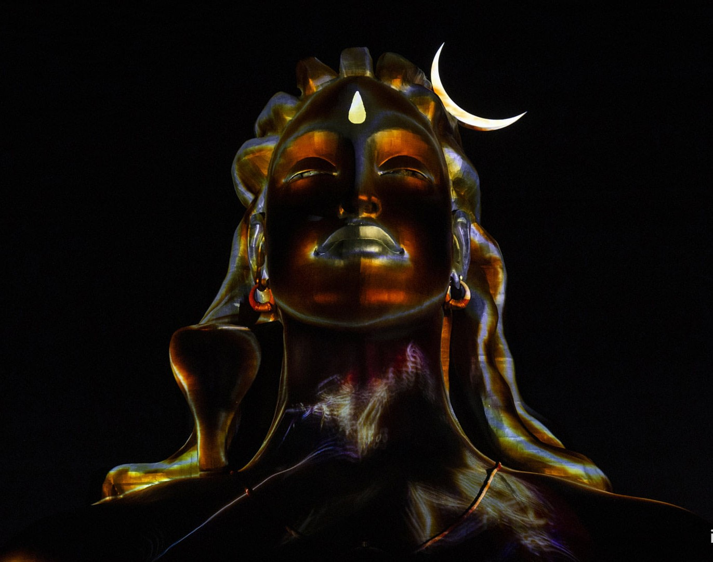
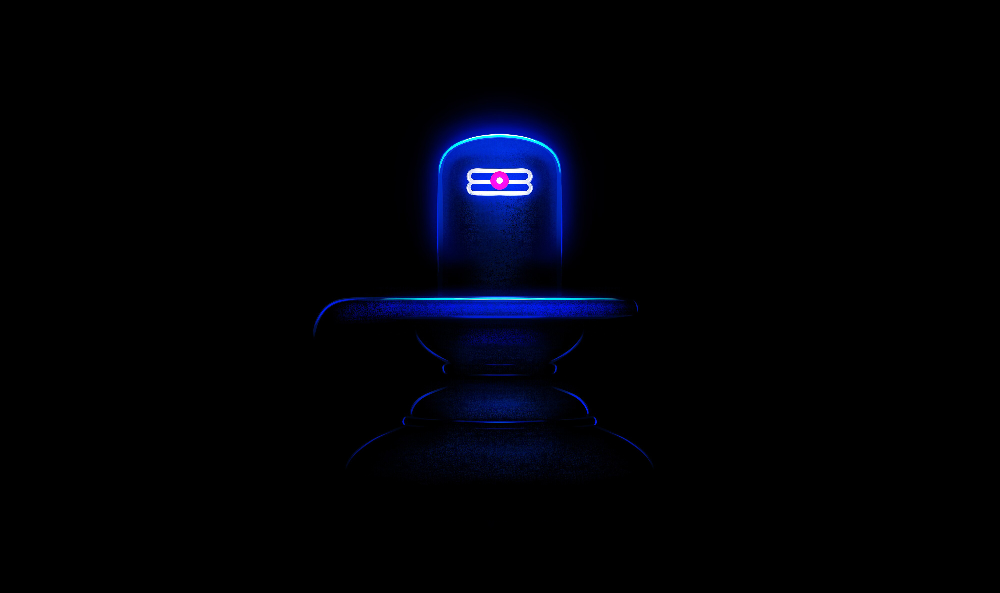
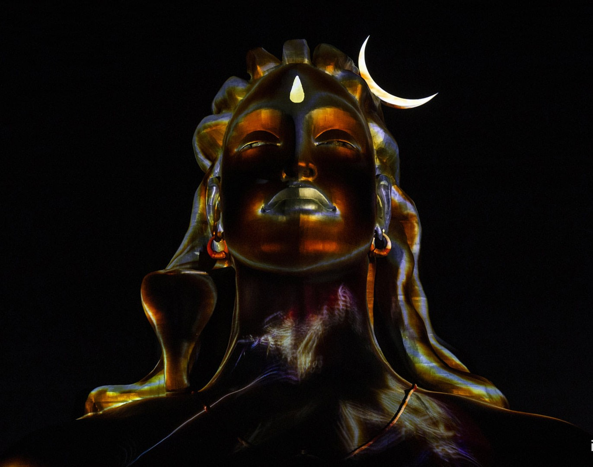
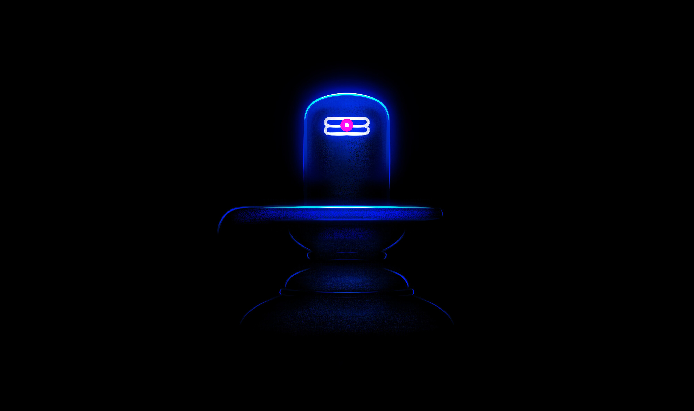
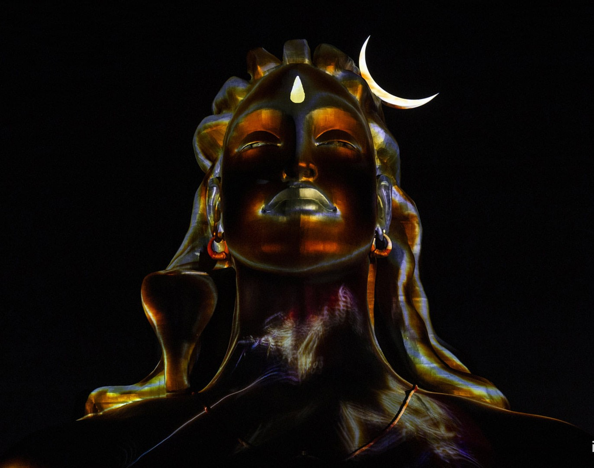
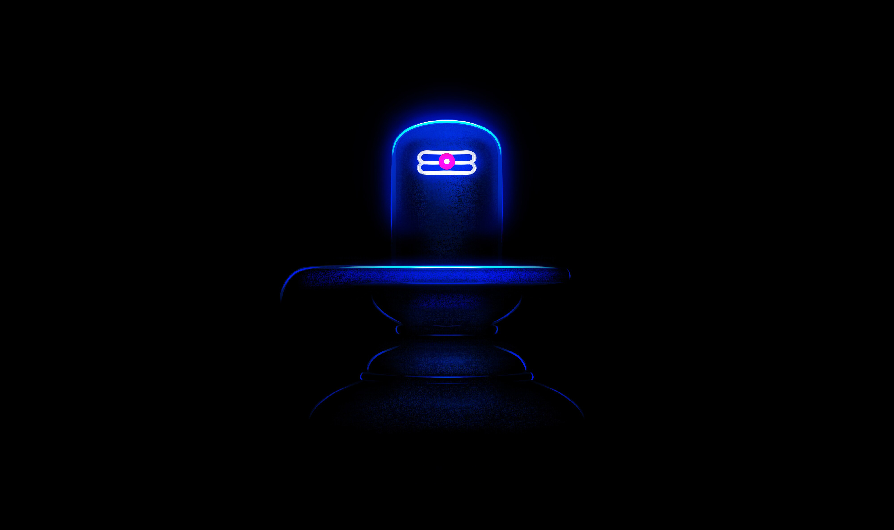

Temple Gallery
 




May Lord Shiva bless you with peace, prosperity, and devotion.
The sacred Sri Istakameswara Swamy Temple at Gurazala, Palnadu District, Andhra Pradesh, is a divine abode of Lord Shiva. The temple is believed to have been constructed in the 12th century by the great minister Nayakuralu Nagamma of the Palnadu Kingdom.
It is said that the temple is blessed with the divine presence of Naga Devata (Snake God) performing pradakshina around the temple at night — a mystical belief held by the devotees.
Ancient stories tell that a hidden underground passage connects this temple to Macherla Chennakesava Swamy Temple and Karampudi Temple.
This temple stands at Burel Ground, surrounded by serenity and spiritual energy.
Every Monday: Special Puja and Abhishekam (Morning & Evening)
Remaining Days: Regular Morning Puja and Abhishekam
Priest: Sri Santhi Swaroop Sarma — Dedicated priest serving the deity and guiding devotees with divine blessings.
Devotees from all over Andhra Pradesh and Telangana visit this temple to fulfill their wishes, believing that Istakameswara Swamy grants all true desires.


Address: Gurazala, Palnadu District, Andhra Pradesh, India
Phone: +91 9515343798 (Priest: Santhi Swaroop Sharma)
Email: istakameswaraswamy@gmail.com
WhatsApp: